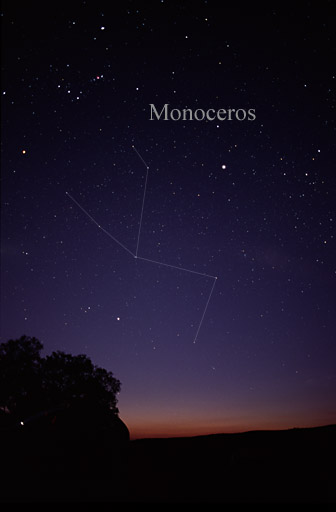
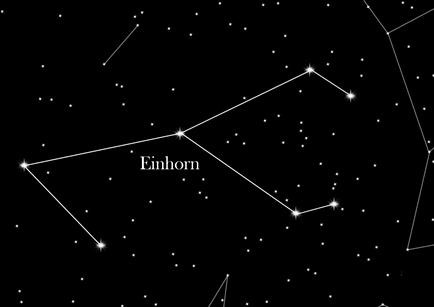

Das Sternbild Einhorn (griechisch monoceros) liegt auf der südlichen Seite des Himmelsäquators.

Es ist ein eher unscheinbares Sternbild. Die Milchstraße verläuft durch das Sternbild. Um das Einhorn befinden sich die Sternbilder „Zwillinge“, „Orion“, „Hase“, „Großer Hund“, „Achterdeck des Schiffs“, „Wasserschlange“ und „Kleiner Hund“.
Wir, hier in Mitteleuropa, können das Einhorn im Winter betrachten. Allgemein kann man es auf fast der ganzen Welt komplett sehen, und zwar zwischen den Breitengraden 79° Nord und 78° Süd.
